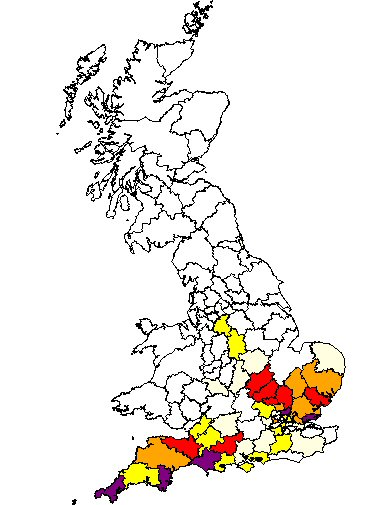

Warren of Leicestershire: The first reference we find is in Ratcliffe Culey, Leicestershire with the marriage of Thomas Warren to Ann Winters in October 1735. John Warren established a coachmaking business in Loughborough that grew into a significant local enterprise.
Warren of Ireland: Our Irish Warren branch traces to Dublin in the early 19th century. Phillip Warren was born in Dublin between 1801 and 1805, son of Thomas Warren, a Framework Knitter.
Lucy Warren, born in Loughborough, married Tom Drury and links the Leicestershire Warren line to the main Noble family tree.